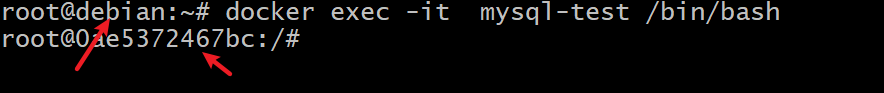
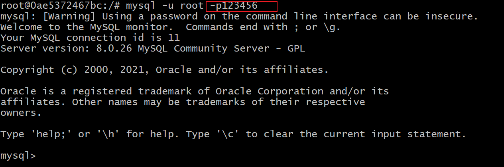
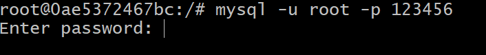

安装 Docker
这里我用虚拟机里的 Debian 系统演示，这里我没有安装 Sudo
更加详细的信息可以参考官方的说明
升级
apt update安装必要软件
apt-get install apt-transport-https ca-certificates curl gnupg lsb-release添加官方 GPG Key（后面的 –socks5 是指定代理，视自己网络环境添加）
curl -fsSL https://download.docker.com/linux/debian/gpg --socks5 192.168.100.133:23333 | gpg --dearmor -o /usr/share/keyrings/docker-archive-keyring.gpg添加官方 docker 安装源
echo \ "deb [arch=amd64 signed-by=/usr/share/keyrings/docker-archive-keyring.gpg] https://download.docker.com/linux/debian \ $(lsb_release -cs) stable" | tee /etc/apt/sources.list.d/docker.list > /dev/null再次 update
apt update安装（如果安装过程缓慢，请参考下面的 proxychains 解决方案，或换个时间段再试试）
apt install docker-ce docker-ce-cli containerd.io验证安装
docker -v
添加 MySQL
查找 MySQL
docker search mysql下载官方最新的镜像
docker pull mysql:latest查看本地镜像
docker images运行 MySQL 容器
docker run -d --name mysql-test -p 3307:3306 -e MYSQL_ROOT_PASSWORD=123456 -v /mydocker/mysql/conf:/etc/mysql/conf.d -v /mydocker/mysql/logs:/var/log/mysql -v /mydocker/mysql/data:/var/lib/mysql mysql-d: 后台运行
-p 3307:3306：将主机的 3307 端口映射到 docker 容器的 3306 端口(第一个是主机端口号，第二个是容器端口号)
--name mysql：运行服务名字
-v /mydocker/mysql/conf:/etc/mysql/conf.d：将主机/mydocker/mysql录下的conf/my.cnf 挂载到容器的 /etc/mysql/conf.d
-v /mydocker/mysql/logs:/var/log/mysql：将主机/mydocker/mysql目录下的 logs 目录挂载到容器的 /logs。
-v /mydocker/mysql/data:/var/lib/mysql：将主机/mydocker/mysql目录下的data目录挂载到容器的 /var/lib/mysql
-e MYSQL_ROOT_PASSWORD=123456：初始化 root 用户的密码
--character-set-server=utf8mb4：设置字符集
--collation-server=utf8mb4_unicode_ci：设置校对集进入 MySQL 终端
docker exec -it 529a4d9afd8e /bin/bash
-it：启动交互界面
529a4d9afd8e：可以是 ID 或是容器名称开始使用 MySQL
mysql -u root -p12345
你没看错，
-p参数和密码是连在一起的。如果你分开输入，会要求你再输入一次密码
Docker 一些基本操作
查看运行的容器
docker ps停止容器
docker stop 容器id强制停止容器
docker kill 容器id删除容器
docker rm -f 容器ID
其他
apt 代理问题
原因：
Aptitude will not use the HTTP Proxy environment variables
VIM 操作
1. 选定文本块。使用v进入可视模式，移动光标键选定内容。
2.复制的命令是y，即yank（提起） ，常用的命令如下：
y 在使用v模式选定了某一块的时候，复制选定块到缓冲区用；
yy 复制整行（nyy或者yny ，复制n行，n为数字）；
y^ 复制当前到行头的内容；
y$ 复制当前到行尾的内容；
yw 复制一个word （nyw或者ynw，复制n个word，n为数字）；
yG 复制至档尾（nyG或者ynG，复制到第n行，例如1yG或者y1G，复制到档尾）
3. 剪切的命令是d，即delete，d与y命令基本类似，所以两个命令用法一样，包括含有数字的用法.
d 剪切选定块到缓冲区；
dd 剪切整行
d^ 剪切至行首
d$ 剪切至行尾
dw 剪切一个word
dG 剪切至档尾
4. 粘贴的命令式p，即put（放下）
p 小写p代表贴至游标后（下），因为游标是在具体字符的位置上，所以实际是在该字符的后面
P 大写P代表贴至游标前（上），整行的复制粘贴在游标的上（下）一行，非整行的复制则是粘贴在游标的前（后）
注：
在正则表达式中，^表示匹配字符串的开始位置，$表示匹配字符串的结束位置。
命令前面加数字表示重复的次数，加字母表示使用的缓冲区名称。使用英文句号"."可以重复上一个命令。
在复制粘贴时，另一组常用的命令是u（撤销操作），U（撤销某一行最近所有修改），Ctrl+R（重做），这些功能主要是vim中的，vi中略有差别
————————————————
原文链接：https://blog.csdn.net/lanxinju/article/details/5727262curl 使用方法
https://www.jianshu.com/p/fc0eb6c60816
https://itbilu.com/linux/man/4yZ9qH_7X.html
verbose 模式，显示详细的连接信息
curl -v www.baidu.com保存网页
curl -o [文件名] google.com代理
--socks5 192.168.100.133:23333
参考
https://blog.csdn.net/J080624/article/details/104297654
https://www.runoob.com/docker/docker-install-mysql.html